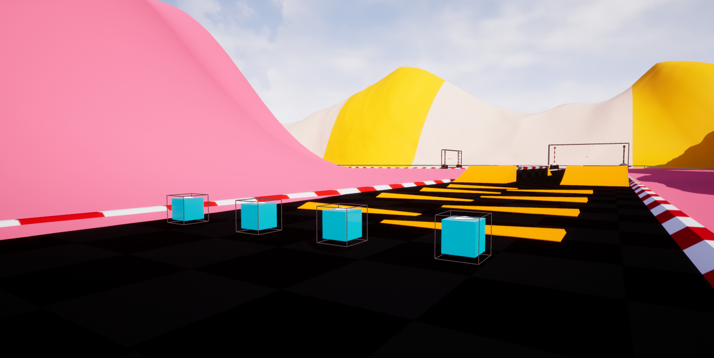
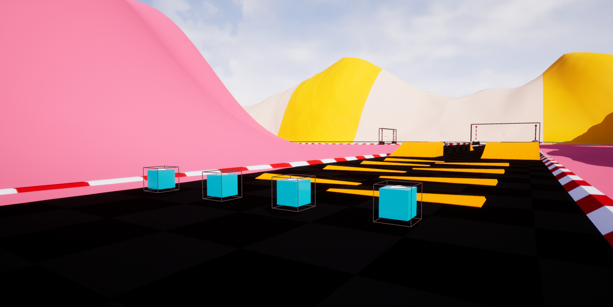
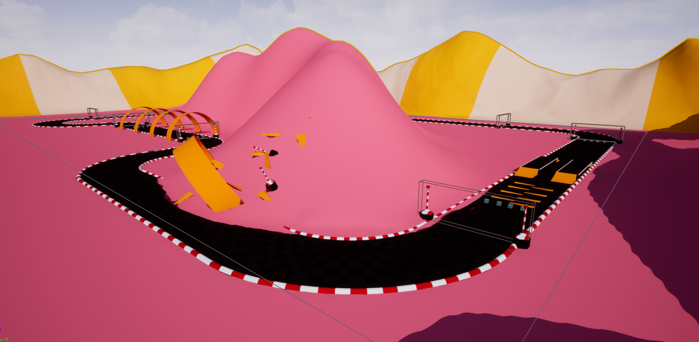
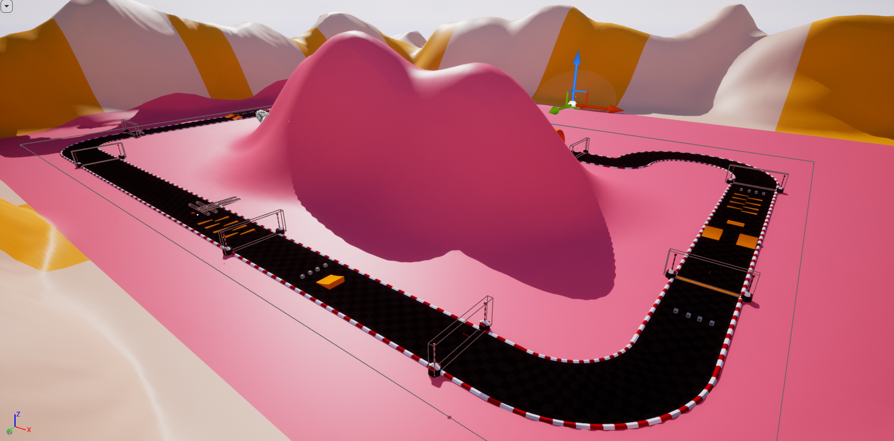

Racing Game
This project acted as a first year final exam for my Game Engine subject. I still was quite new at working with engines
and my abilities were quite limited. I was given a couple of days to make a racing game that included a specific number
of power-ups, like the ones in Mario Kart, which i will disclose below.
In addition, it required two different perspectives depending on the mode. For single player it would be a third person perspective,
from the back of the car controlled by the player, while an AI competitor would go through very specific checkpoints to try reach the
end of the race to beat the player.
Unfortunately, by the time I made the videos, updating the engine broke quite a few things, like the
other vehicle on single player or the checkpoints in the LAN & Multiplayer.
 

Similar to how it works in Mario Kart, players can pick up power-ups in the form of cubes that will allow them to trigger them
whenever they want.
These powers are the following:
- Making the vehicle smaller
- Making the vehicle bigger
- Slowing down
- Speeding up

As part of the requirements for the exam, I set up the player selection to be keyboard for player one,
while each controller connected as the rest in order of connection.
The camera would then register the position of each player and adjust the zoom and the location to keep everyone
within view. If players where close to each other, the camera will zoom into the action but the greater the distance
the more centered and far away the camera would be from the players.

My main challenge during this project was my programming experience and the information available to make a multiplayer game.
The Unreal Documents where not updated and things did not work on the way explained in the text. Which resulted in a lot time
used to research and multiple attempts/testing of the multiplayer.
I decided to fake the AI, by setting a specific array of positions which the vehicle will move towards, I yet did not have
any experience with pathfinding and adapting the vehicle actor to be able to reach those without artificially moving it was
far from my reach due to inexperience and time restrains.
Another obstacle faced, was that the physics of the vehicles themselves were quite extreme which led it to flip pretty easily. My solution
was to put a trigger on the top of the car and use it to determine if it was flipped based on rotation and location. If the trigger
happened, the player would be teleported to a checkpoint based on the last one crossed.

I think this project really improved my ability to research and think outside the box to solve problems using the tools at
my disposal and overall adaptability to new obstacles and challenges that may spontaneously appear during production.
I believe that being able to deal with new arrising blockades within a reduced ammount of time,
can do wonders to efficiency and matching restrictive deadlines.
In addition, not being able to reach out to a professor or classmates for assistance with issues outside of my knowledge reinforced
my individuality and assertiveness towards tackling problems in the future.